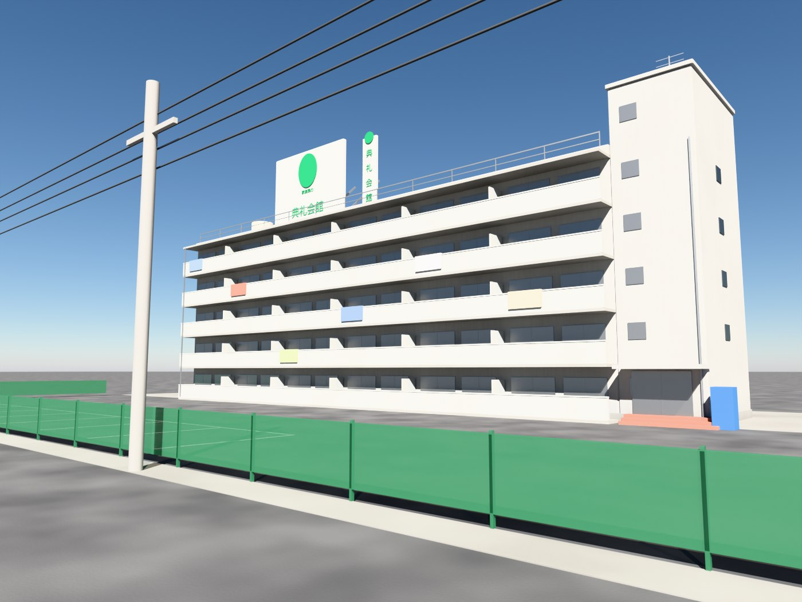
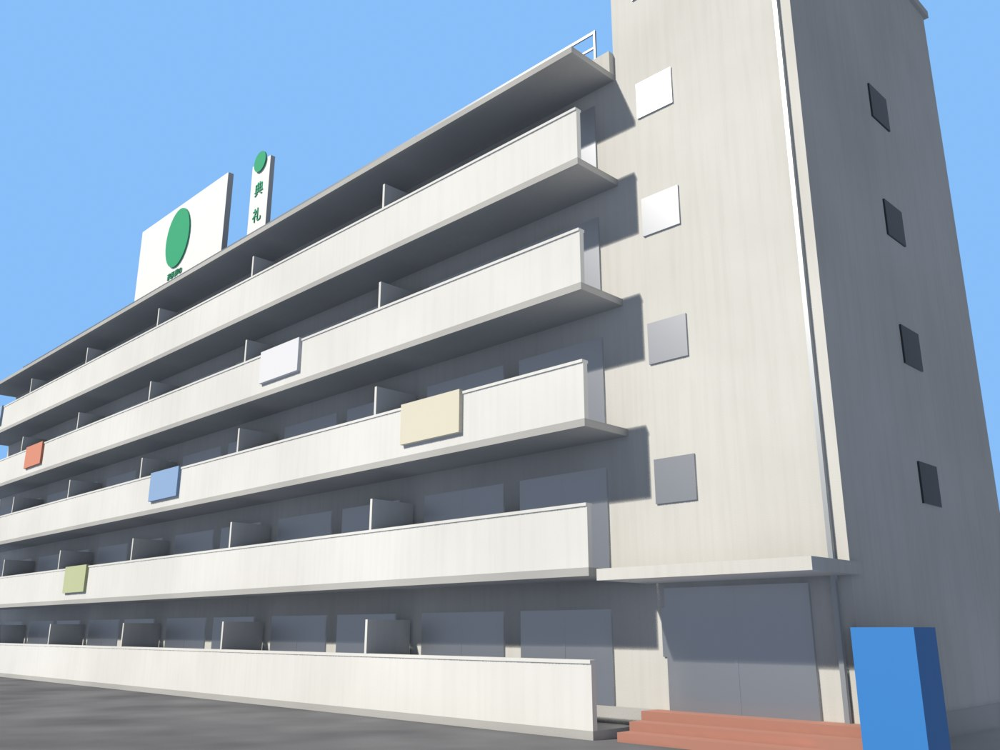
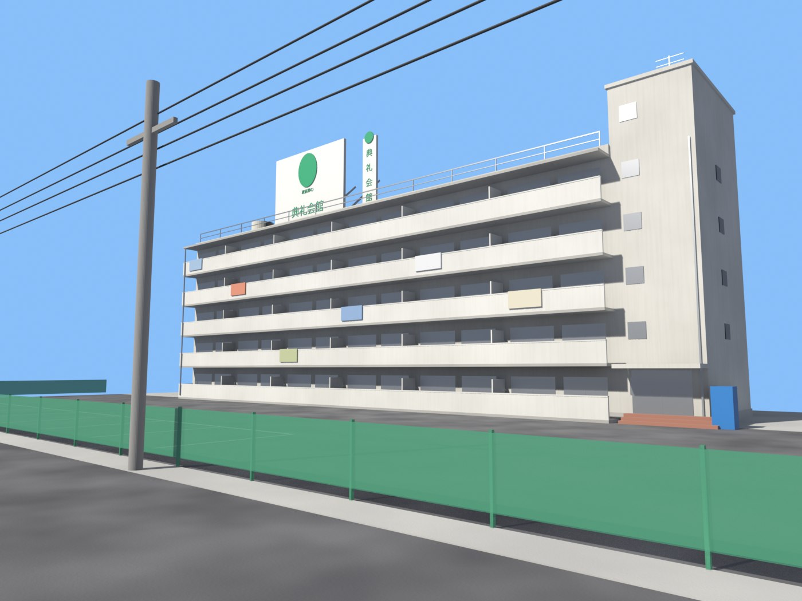
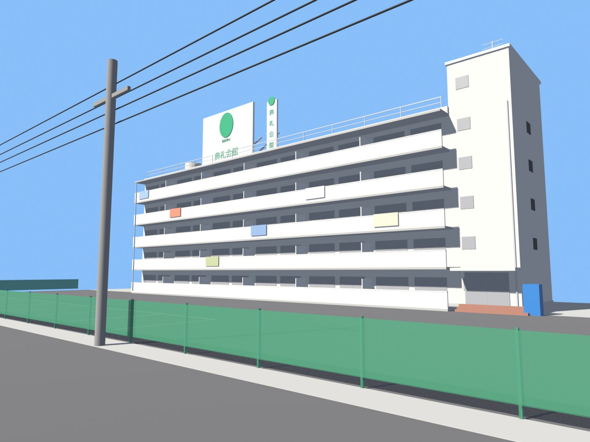

SUUMO掲載の実在賃貸マンションを外観写真から再現
— 第2林マンション（大阪府寝屋川市）
使用したプロンプト
PROMPT 1 — モデリング
下記のマンションをBlenderで忠実に再現して https://suumo.jp/library/tf_27/sc_27215/to_1000848588/
PROMPT 2 — 質感向上
壁や窓のテクスチャをもっとフォトリアルにして
PROMPT 3 — さらにフォトリアル化
もっとフォトリアルにして
※ AIがSUUMOの掲載ページから物件データ（RC造5階建・総戸数30戸・1980年3月築・南向きバルコニー・2LDK 49.5〜53㎡）と外観写真・間取り図を読み取り、 寸法を推定してBlenderのPythonスクリプトで一括生成。写真と同じ構図のカメラまで自動設定しています。 なお掲載写真そのものの転載は避け、本ページの画像はすべてAIが生成した3DCGレンダリングです。
結果（レンダリング）




再現した建物の特徴
- RC造5階建・板状マンション — 総戸数30戸から「6戸/階×5層」を割り出し、住戸幅6.6m・全長約40mで躯体を構成
- 南面の全戸連続バルコニー — コンクリート手すり壁＋笠木、戸境の隔て板、LDK・洋室の掃き出し窓×2（間取り図の田の字プランを反映）
- 東端の階段塔 — 屋上に突出する塔屋と、各階に縦に並ぶ小窓、妻壁の縦樋
- 屋上の大型広告看板 — 緑のロゴ＋「典礼会館」の文字（日本語フォントで実文字入り）、縦型看板、高架水槽、屋上フェンス、TVアンテナ
- エントランスまわり — ガラスドア・庇・赤茶タイルの階段・青い自販機
- 外構と前景 — 緑メッシュフェンス（半透明）、白線入り駐車場、電柱と電線、カラーコーン
- 生活感の演出 — バルコニーに干された布団・洗濯物を写真の配置に合わせて再現
- 築45年の経年表現 — 吹付外壁の骨材バンプ・色ムラ・雨だれ・地際の黒ずみ
フォトリアル化のプロセス
3回のプロンプトで「形状の忠実再現 → 質感 → 光学的リアリティ」と段階的に品質を引き上げました。 途中で発生した不具合（全パーツが半分サイズで生成されるバグ、テクスチャ座標の縞、露出の白飛び）も、AIがレンダリング結果を自分で確認しながら修正しています。
- データ収集 — 掲載ページから構造・階数・戸数・間取りを取得し、外観写真から看板・階段塔・フェンス等のディテールを読み取り
- 一括モデリング — Pythonスクリプトで躯体〜外構まで約460オブジェクトを生成。生成後に全パーツが半分サイズになるバグを発見し、429個を一括修正
- プロシージャルテクスチャ — 吹付タイル外壁（骨材バンプ＋色ムラ＋雨だれ）、住戸ごとにランダムな窓ガラス、アルミサッシ、アスファルト
- 物理ベース化 — レンダラーをCyclesへ変更、物理大気モデルの空、実測相当の太陽光（550W/㎡）、全442パーツへのベベル追加
- 露出の追い込み — 白飛び→露出調整のイテレーションを4回実施し、「白い外壁は明るく・アスファルトは中間グレー」という実写カメラの輝度バランス（-5.5EV付近）に収束